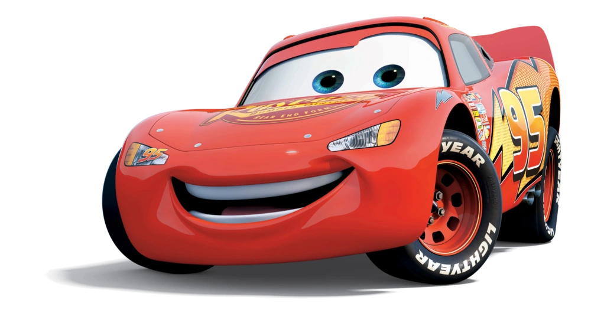
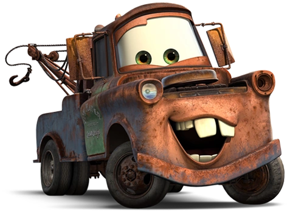

Filmes Carros 3

sinopse:
Veterano das pistas, o campeoníssimo Relâmpago McQueen se vê em apuros após o surgimento de um novato bastante veloz, Jackson Storm, que utiliza de alta tecnologia nos treinamentos. Obrigado a chegar ao limite para batê-lo, McQueen acaba sofrendo um sério acidente durante uma corrida, que o obriga a abandonar o campeonato daquele ano. Prestes a iniciar a próxima temporada, ele se vê em dúvidas sobre se consegue ser rápido o suficiente para bater Storm e, por causa disto, busca ajuda com seu novo patrocinador.
Relâmpago McQueen: O carro de corrida vermelho, veloz e extremamente talentoso, protagonista da franquia Carros. No início da história, McQueen é confiante, competitivo e pensa apenas em vencer corridas e conquistar fama. No entanto, ao ficar preso na pequena cidade de Radiator Springs, ele conhece novos amigos e descobre que a verdadeira felicidade não está apenas nos troféus, mas também na amizade, na humildade, no trabalho em equipe e em ajudar os outros. Ao longo de sua jornada, ele se torna um piloto mais maduro, generoso e inspirador.

Mate (Tom Mate): O velho guincho enferrujado, simpático e muito engraçado, que vive em Radiator Springs. Apesar de sua aparência simples e desajeitada, Mate possui um grande coração e demonstra uma lealdade inabalável aos seus amigos, especialmente a Relâmpago McQueen. Seu jeito espontâneo, otimista e divertido rende muitos momentos de humor, mas ele também prova ser corajoso e inteligente quando a situação exige. Mate ensina que a verdadeira amizade não depende da aparência ou da fama, e sim da confiança e do carinho entre as pessoas.
